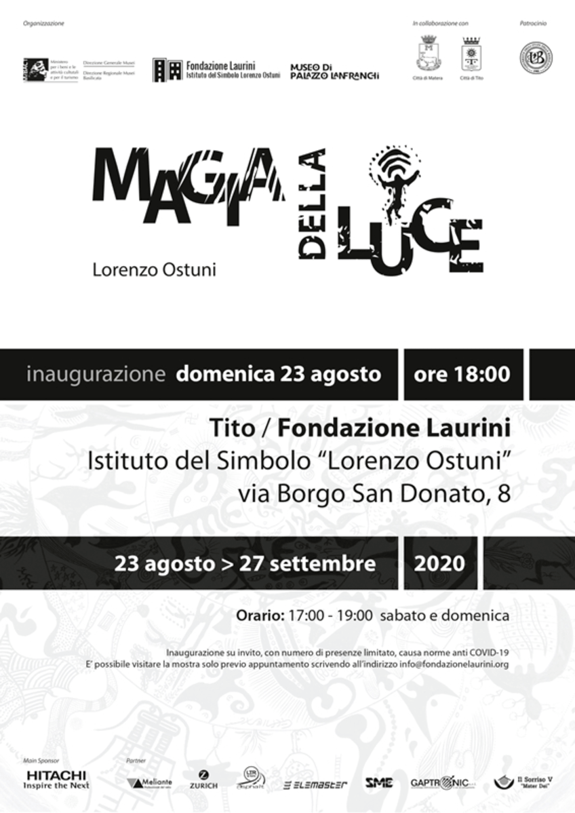
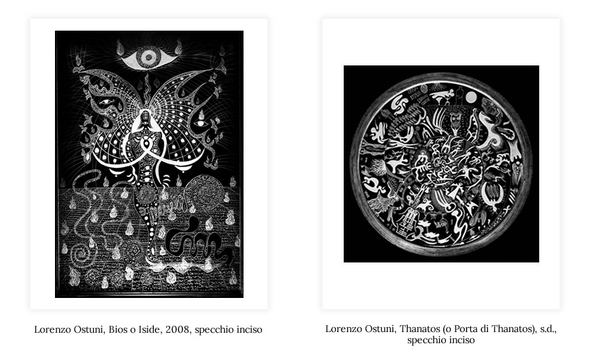
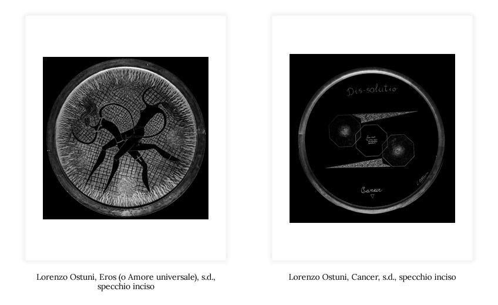
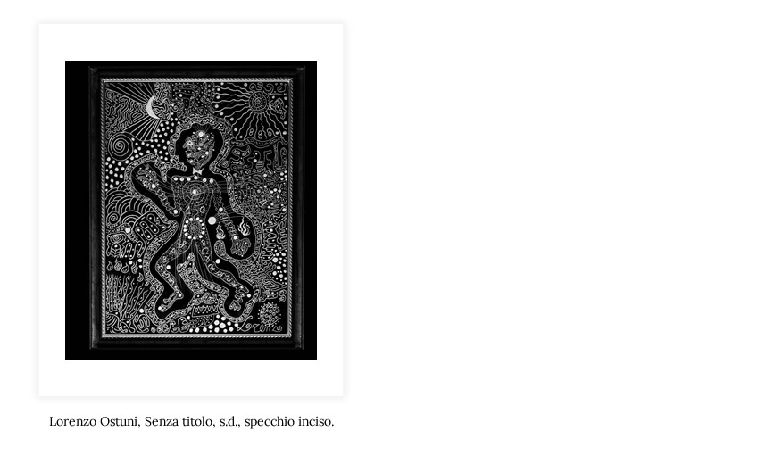
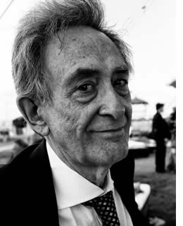

- Presentazione di Claudio Strinati
- Omaggio a Lorenzo Ostuni di Giancarlo Laurini
- Nota di Giampaolo D’Andrea, Consigliere per gli affari istituzionali e le relazioni sindacali del ministro per i Beni e le attività culturali e Assessore alla cultura e all'innovazione del Comune di Matera
- Introduzione alla mostra - nota integrale di Fiorella Fiore
- Per una biografia di Lorenzo Ostuni di Antonia Maria Fiorella Fiore Ostuni
- Nota del Sindaco di Tito, Graziano Scavone
- Nota di Giuseppina Anna Laurino, Segretario generale della Fondazione Laurini, Assessore alle Attività Produttive, commercio, rete e innovazione tecnologica del Comune di Tito
- Nota di Vincenzo Damiano, World Manufacturing Director Hitachi Rail Sts, main sponsor
- Lorenzo Ostuni "Artista totale" di Mariadelaide Cuozzo
Introduzione
Lorenzo Ostuni amava raccontare che la prima volta che incise uno specchio, fu per desiderio dell'amico Federico Fellini. Era il 1973 e Lorenzo lavorava in RAI come autore e regista; tra Fellini e Ostuni si era instaurata una comunione d'intenti data un'affinità elettiva che trovava terreno fertile anche nelle passioni condivise verso il simbolo e la spiritualità nelle sue molteplici forme. Lorenzo aveva già iniziato a creare sistemi simbolici su carta, su pietra e altri supporti (un archivio che oggi annovera più di 16mila simboli) e per questo Fellini gli consegnò una frase con la preghiera di aiutarlo ad interpretarla meglio grazie proprio alla sua capacità di elaborare i concetti attraverso il segno: «Il Tao è quella cosa che specchia sé stessa mentre specchia l'altro». I tentativi furono molti, ma l'esito arrivò solo quando Lorenzo provò ad incidere su un materiale del tutto nuovo, lo specchio, appunto, dando vita così ad un cospicuo corpus di opere (più di 200) e ad una tecnica di cui è Lorenzo è stato il pioniere. Questa mostra (che segue l'importante rassegna tenutasi a Roma, a Villa Torlonia, nel 2017 e precede l'ultima tappa del progetto espositivo "Magia della Luce", a Tito, nel palazzo della Fondazione Laurini – Istituto del Simbolo "Lorenzo Ostuni") ne espone una minima, ma significativa parte. Questi specchi sono parte di una ricerca complessa che ha reso Lorenzo Ostuni uno studioso di filosofia, di simbologia, delle religioni, della psicologia, tale da renderlo indefinibile con le nostre classificazioni contemporanee e assimilabile solo a quell'uomo "universale", tipico del periodo rinascimentale, in grado di studiare e fare proprie molte e diverse materie. Il percorso espositivo ha cercato di dare un affresco di questa complessità, legata in particolare allo studio delle costellazioni dello Zodiaco, della Kabbalah ebraica e del Biodramma, una struttura inventata anch'essa da Ostuni e tesa a far emergere le potenzialità del soggetto che la sperimenta attraverso un approccio, anche terapico, che si articola in tre momenti come tre sono i passaggi fondamentali della vita: Bios, la nascita; Eros, la vita e l'amore; Thanatos, la morte e il passaggio verso l'oltre. Fil rouge di tutti i temi è il simbolo, inteso come forza catartica ed espressione degli archetipi che attingono alla nostra memoria collettiva. Nello specchiarsi, lo spettatore viene portato a riflettere, termine inteso come riverbero, certo, ma anche come tempo speso per fermarsi e osservare. Lorenzo ricordava sempre l'influenza potentissima data dalla visione del progetto di Leonardo da Vinci (mai realizzato) della "camera degli specchi", una stanza ottagonale, interamente rivestita di specchi, il cui disegno era accompagnato, nel testo da lui letto anni prima, da questa annotazione: «se tu entri in questa stanza di specchi, troverai te stesso nell'infinito». Questa mostra non ha la pretesa di far raggiungere questo straordinario risultato, ma si augura che possa ispirare profondamente il visitatore. «Incidere lo specchio è una sfida ascetica contro la morte», diceva Lorenzo, riferendosi a questa perenne fragilità materiale del supporto e al delicato momento dell'incisione in cui il trapano a punta di diamante disegna l'immagine come un negativo, portando alla luce il segno e lasciando il resto nel buio. Quello che noi oggi sappiamo, a sette anni dalla scomparsa di Lorenzo Ostuni, è che questa sfida lui è riuscito a vincerla: perché il suo pensiero, che ancora deve essere analizzato nelle sua complessità, si riverbera in ciascuno di questi specchi, lasciando una traccia di luce e un testimone in ogni visitatore che vi poserà lo sguardo.



La vita
Lorenzo Ostuni è stato simbologo, studioso di tradizioni culturali, terapeuta, artista visivo, poeta, drammaturgo, sceneggiatore, autore televisivo. Nato nel 1938 a Tito, nei pressi di Potenza, da una famiglia della piccola borghesia rurale, lascia ancora bambino il suo paese per studiare e si trasferisce infine a Roma alla metà degli anni Sessanta. In quel periodo la sua biografia è dominata dall’attività di drammaturgo e regista, che trova un seguito, nel 1973, con la fondazione nel quartiere romano di Prati del “teatrino” La Caverna di Platone (poi rimasto sempre suo studio) e nella creazione del Biodramma, tecnica di esplorazione psicologica e spirituale basata sull’improvvisazione e l’uso del corpo, che sperimenta estesamente in Italia e al celebre Esalen Institute californiano. Dalla fine degli anni Sessanta all’inizio dei Duemila, come autore RAI, promuove e segue opere di Tarkovskij, Angelopoulos, Ronconi, Gassman, Comencini. Stringe un’amicizia duratura con Federico Fellini, che avrà una vasta influenza sulla sua opera. Dall’inizio degli anni Settanta sviluppa una ventina di “sistemi simbolici”: collezioni che abbinano testi e opere visive e costituiscono altrettanti strumenti d’indagine della vita interiore di singoli e gruppi. Ostuni e i suoi collaboratori li somministrano, nel corso di quattro decenni, a migliaia di soggetti. Due di essi – le 99 Chimere e le Sfingi – vengono pubblicati in volume. All’incirca dai primi anni Novanta, una parte rilevante della produzione di Ostuni è dedicata all’incisione di specchi, eseguita con una tecnica del tutto originale. Le figurazioni attingono alle fonti più disparate – dalle civiltà dell’estremo e del vicino oriente a quelle del Mediterraneo, alle tradizioni artistiche e scientifiche d’Occidente – reinterpretate secondo una personale ricerca grafica e simbolica. Anche gli specchi di Ostuni, come tutte le sue produzioni, non vanno intesi come puri oggetti estetici ma considerati come strumenti in nuce di trasformazione individuale e collettiva.
Lorenzo Ostuni muore a Roma il 7 dicembre 2013.